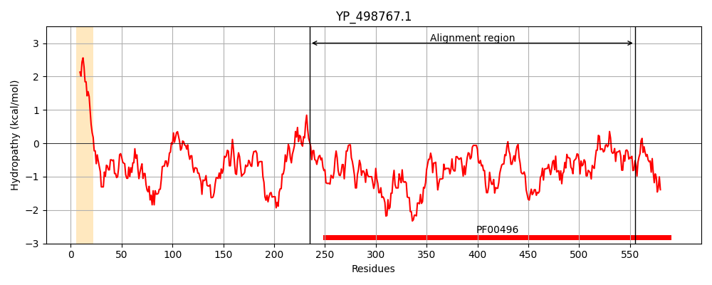
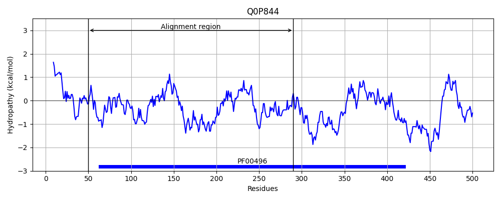
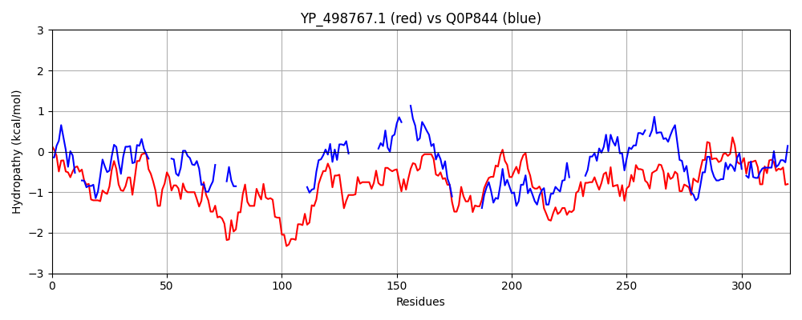

Hit Accession: Q0P844
Hit TCID: 3.A.1.5.28
Hit Description: gnl|BL_ORD_ID|12440 gnl|TC-DB|Q0P844|3.A.1.5.28 Putative peptide ABC-transport system periplasmic peptide-binding protein OS=Campylobacter jejuni subsp. jejuni serotype O:2 (strain NCTC 11168) GN=Cj1584c PE=4 SV=1
Mach Len: 321
e:0.000006
Query TMS Count : 1
Hit TMS Count: 0
TMS-Overlap Score: 0.000000
Predicted Substrates:CHEBI:25517;nickel(2+)
BLAST Alignment:
Score: 114 , Bit scores: 48 bits, E-value: 6.4e-06, Alignment length: 321, Percentage identity: 22
Query: 235 MYTRLLLLDENDHLTTKGSLSHDYAVNKDNKAFYFLLRDDDYFAKVVNGQARNTGERVSAEDVKFSLDRARDKKSVPNNNTYNMHKHINDIKILKDEDIDQLRKEKDKDDKSIYDKLIKAYNVKSLTTDGQKVNNKDGIYQIVKITTDQSMPREVNYLTHSSAGILSKKFVNQVNQEYPKGYGDSSTIPANSDGKNALYASGAYIMTQKNAYQATFQRNPGFNETEKGSYGPAKIKNITLKFNGDPNNALSELRNHSIDMLADVNQKHFDLIKSDKNLSIIRKNGRKSVFLMLNIKKGIFKTHPNLRQAVVNAIDQDQFIK 555
+++ L DEN ++ K L+ + ++KD + LRDD + + G + SA+DVKFS++ ++ P NN+ SIY +V+ L VKIT + P +L S G+L K + N + +S +N + + K F+ N F + K + +K DP+ A +EL+N ID A ++ ++ K+D+N I+R+ LM N+ K +RQA+ A+D++ +K
Sbjct: 50 VFSGLTRFDEN--MSLKPDLAKSWDISKDGLVYDIFLRDDVLW---------HDGVKFSADDVKFSIEAFKN----PKNNS------------------------------SIYVNFEDIKSVEILNPSH------------VKITLFKPYPA---FLDALSIGMLPKHLLENEN------------LNTSSFNQNPIGTGPYKFVKWKKGEYVEFKANEHFYLDK------VKTPRLIIKHIFDPSIASAELKNGKID-AALIDVSLLNIFKNDENFGILREKSADYRALMFNLDNEFLK-DLKVRQALNYAVDKESIVK 290 | Protein Hydropathy Plots: |
|---|
|  |  |
Pairwise Alignment-Hydropathy Plot:
|
|---|
|  |